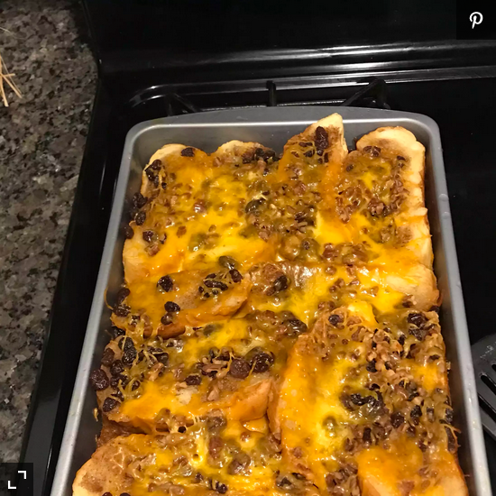

Mexican Capirotada

Description
Per Serving:
490 calories; protein 11g; carbohydrates 49.6g; fat 29g; cholesterol 60.5mg; sodium 590.3mg.
This is the best and most authentic capirotada recipe EVER, but I did alter it a bit to suit my family’s preferences.
Ingredients
- 3 cups of water
- 3 cups brown sugar
- 2 cinnamon sticks
- 2 cups butter
- 2 loaves of sliced bread
- 1/4 teaspoon ground cinnamon
- 1/4 teaspoon ground nutmeg
- 1/8 teaspoon ground cloves
- 2 cups raisins
- 2 cups peanuts
- 1 pound shredded cheese
Steps
- Preheat oven to 350 degrees F (175 degrees C).
- Combine water, 2 cups brown sugar, and cinnamon sticks together in a saucepan; bring to a boil. Reduce heat and simmer, stirring occasionally, until sugar is dissolved and liquid has reduced into a syrup, about 15 minutes. Remove cinnamon sticks from syrup using a slotted spoon.
- Spread butter onto each toasted bread slice. Make 1 layer of buttered bread in a deep casserole dish or oven-proof stockpot. Sprinkle cinnamon, nutmeg, and cloves over bread layer. Sprinkle 1/4 the raisins, 1/4 the peanuts, 1/4 the remaining brown sugar, and 1/4 the Cheddar cheese over bread layer. Repeat layering with remaining ingredients. Pour cinnamon syrup over entire dish; cover with aluminum foil.
- Bake in the preheated oven until cooked through, about 30 minutes. Cool for 20 minutes before serving.
Homepage